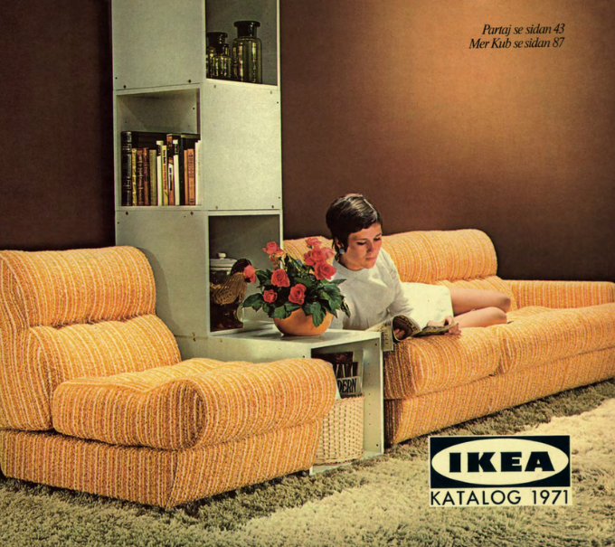
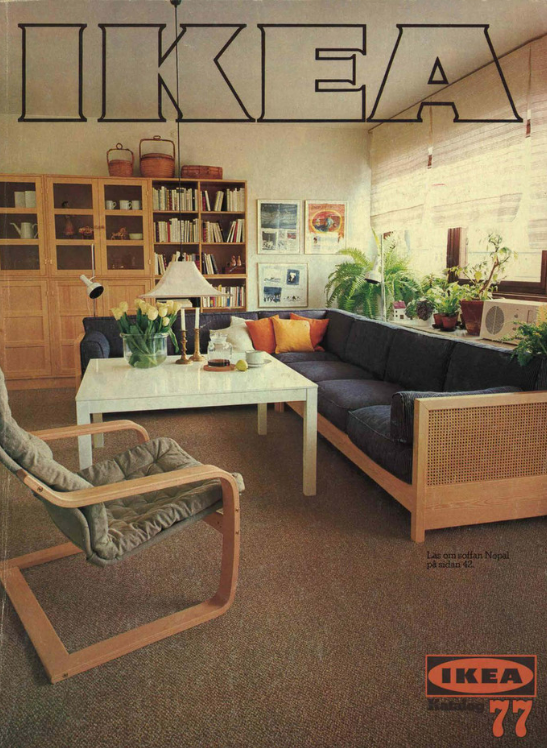

In Line With the Times


A Shift Towards the Future
The 70s were all about wacky textures and sustainable practices. You can see IKEA shifting to a more environmental approach with the reuse of fabrics and multipurpose materials.



This is the cover for the IKEA 79 and 77 catalogues.


A cute use of colour in the catalogues I found interesting.
IKEA began to arrange furniture in a way that you could tell every individual product apart from the setting.